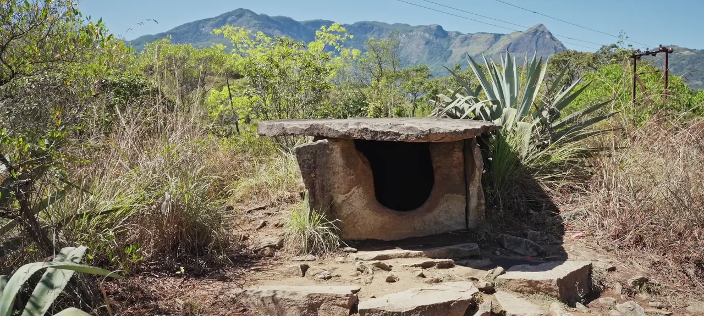
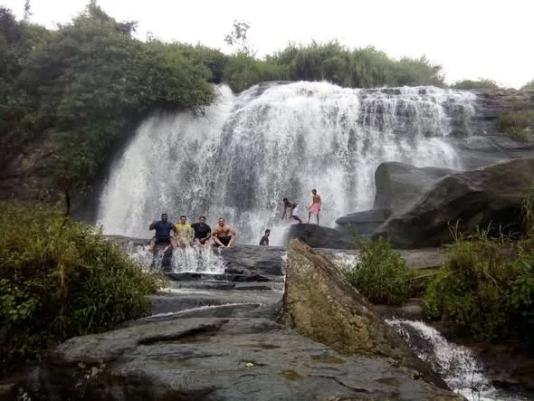
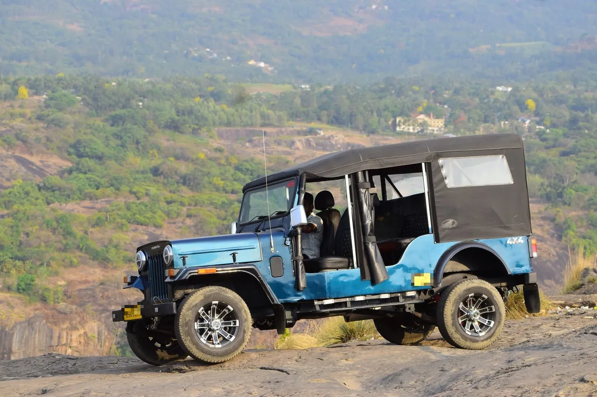
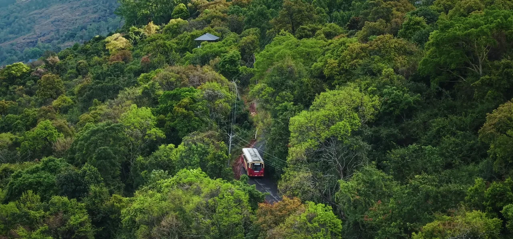
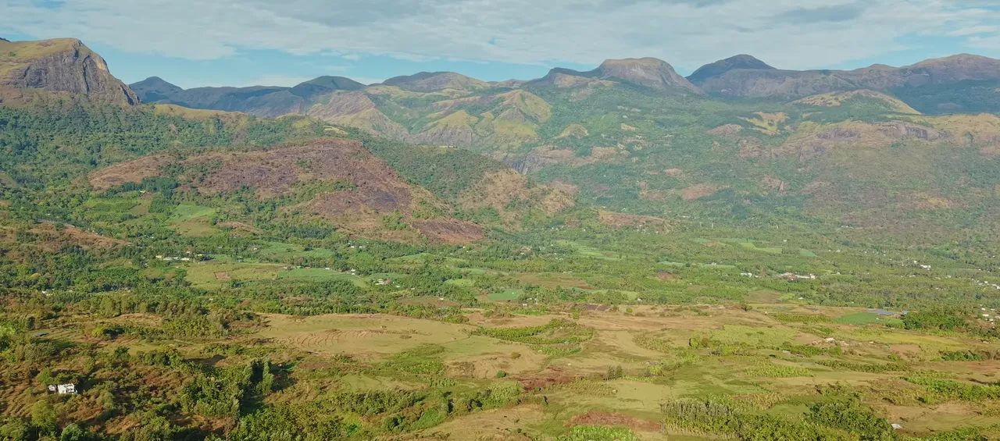
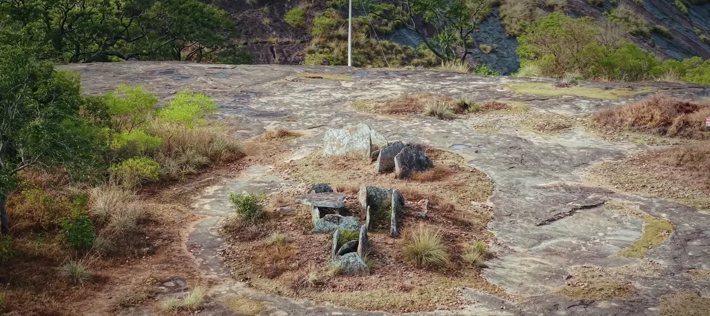

Resort stay
Stay & resort assistance
Ask us to check suitable resorts, homestays, farm stays, hillside retreats, and available mud-house experiences.
Find a Kanthalloor stay or resort
Plan your trip
Build a trip around the places and experiences that suit your group. Contact us to confirm current availability, timing, and inclusions.
Resort stay
Ask us to check suitable resorts, homestays, farm stays, hillside retreats, and available mud-house experiences.
Find a Kanthalloor stay or resortLocal sightseeing
Request a practical itinerary covering places that match your interests and available time.
Explore Kanthalloor Unique experiencesJeep Safari
Enquire about current safari routes, pickup arrangements, duration, vehicle suitability, and local transport options.
Ask about transportFlexible itinerary
Combine sightseeing, orchards, waterfalls, village experiences, and nearby Marayoor attractions around your dates and group.
View Kanthalloor tour packagesAll services are enquiry-based and subject to availability. Prices, inclusions, cancellation terms, pickup points, and property details are confirmed with you before booking.
Recognised rural destination
Kanthalloor received national Gold recognition as a Best Tourism Village for its rural and sustainable tourism work.
Why plan with us
We narrow the choices, check what is currently realistic and let you review the details before deciding.
Our team lives, breathes, and works right here in Kanthalloor. We know every hidden trail, the best times to visit the fruit farms, and the true heart of the village because this is our home.
Travel should be exciting, never stressful. Because we are right here on the ground, we offer constant, dependable support throughout your trip—handling every detail safely so you can just relax and enjoy the beauty of Kanthalloor.
No hidden fees, unexpected surcharges, or inflated tourist markups. We believe in honest, straightforward pricing that gives you the true value of your money, ensuring your Kanthalloor trip remains budget-friendly without ever cutting corners on quality.
Explore the region
Start with the orchards and villages, then make time for the forests and falling water around the highlands.
Explore popular Kanthalloor tourist places

Farms & orchards
Explore Kerala's winter fruit basket, famous for its rare apple orchards, strawberry farms, and terraced vegetable cultivation in a cool, misty climate.

Heritage & nature
Discover Kerala's natural sandalwood forests, ancient prehistoric dolmens (Muniyaras), and the region's famous sweet jaggery.

Waterfalls
Include suitable waterfalls and highland viewpoints around Kanthalloor, Marayoor, and the wider Munnar route, based on current access and weather.

Things to do
Ask about locally available off-road sightseeing through rugged highland terrain, forest-side routes, plantations, and mountain viewpoints. Routes and availability vary and should be confirmed before travel.
Ask about responsible visits to working farms and orchards. Entry, activities, and fruit availability depend on the season and each farm's permission.
Arrange local assistance for an itinerary covering farms, waterfalls, viewpoints, heritage, and nearby Marayoor, subject to current access conditions.
Real Kanthalloor
Forest roads, ancient stones, mountain farms, and changing light captured around Kanthalloor and Marayoor.



Plan your journey
Contact us for a Kanthalloor package, resort or homestay enquiry, mud-house experience, sightseeing plan, jeep safari, or local transport arrangement.
Marayur, Kerala, India